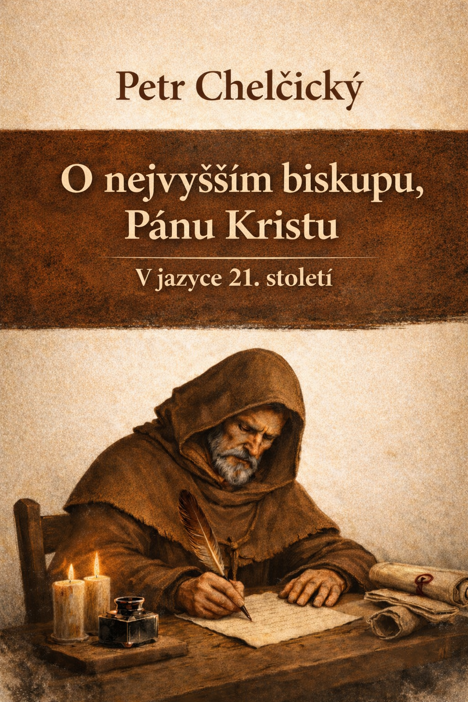

Část 1
Úvod
V pojednání O nejvyšším biskupu, Pánu Kristu Petr Chelčický – tento vynikající badatel Bible 15. století – osvětluje základní otázky křesťanského života. Vychází z evangelia…
Otevřít kapitolu →Webová edice v jazyce 21. století.

V pojednání O nejvyšším biskupu, Pánu Kristu Petr Chelčický – tento vynikající badatel Bible 15. století – osvětluje základní otázky křesťanského života. Vychází z evangelia…
Otevřít kapitolu →O nejvyšším biskupu, [1] Pánu Kristu, k němuž máme vzhlížet více než ke všem svatým Nastal čas chudoby, zármutku, tísně, roztrhání, rozdělení a opuštění. To vše postihlo lid Boží,…
Otevřít kapitolu →Tato kniha zpřístupňuje traktát Petra Chelčického O nejvyšším pastýři, Pánu Kristu v jazyce 21. století. Traktát je převeden do současné češtiny podle rukopisné…
Otevřít kapitolu →Kdo má lidi vést a komu máme důvěřovat? V pojednání O nejvyšším biskupu, Pánu Kristu Petr Chelčický připomíná, že nejvyšší autoritou jsou Bůh a Kristus. Chelčický…
Otevřít kapitolu →Do jazyka 21. století převedl Pavel Dolejš Biblické odkazy jsou převzaty z Českého ekumenického překladu, vydala Česká biblická společnost, 1995 Jazyková modernizace a poznámkový…
Otevřít kapitolu →V pojednání O nejvyšším biskupu, Pánu Kristu Petr Chelčický – tento vynikající badatel Bible 15. století – osvětluje základní otázky křesťanského života. Vychází z evangelia…